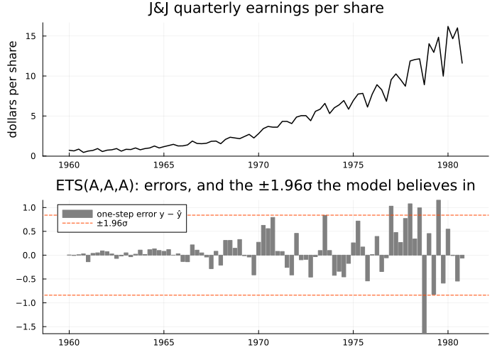
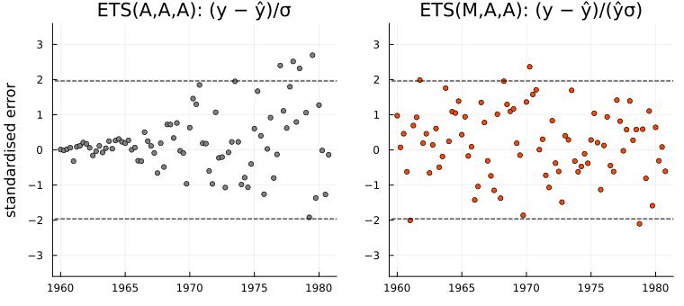
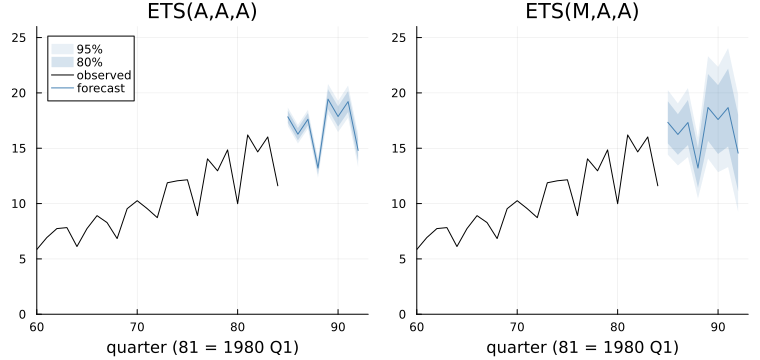
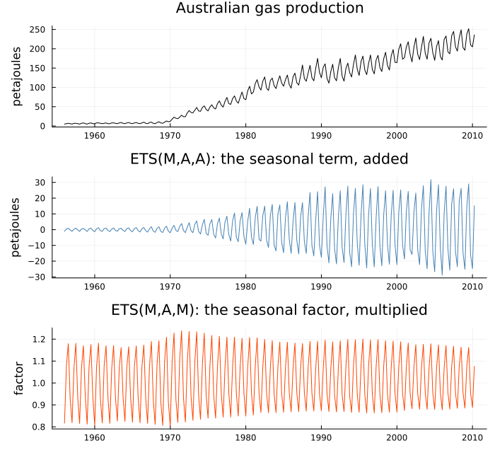
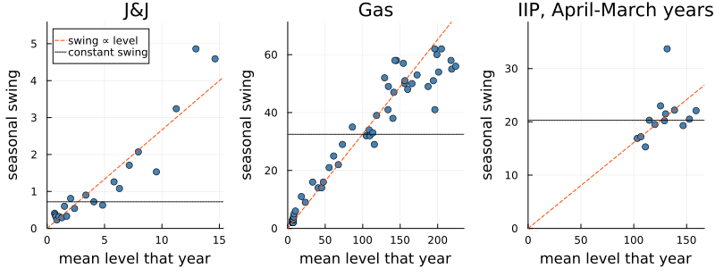
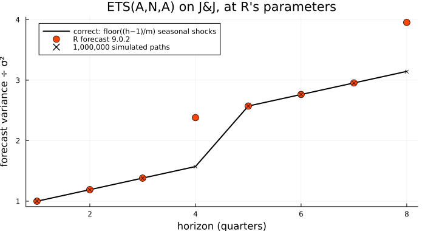
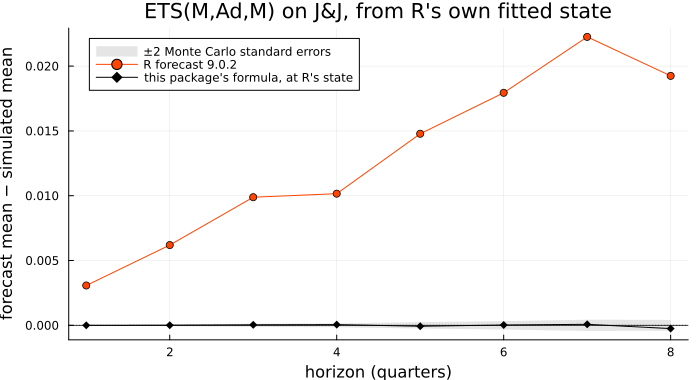

When the Error is Multiplicative
Johnson & Johnson earned 71 cents a share in the first quarter of 1960 and $16.20 in the first quarter of 1980. Somebody forecasting 1981 from these numbers needs a band as well as a line, and the question is how wide. A miss of 50 cents would have been most of a quarter's earnings in 1960; in 1980 it is about three per cent. The models of Chapter 25, as fitted there, have an additive error — one σ, in rupees or dollars, for the whole sample — and so must give one answer to a question whose honest answer changed by a factor of twenty. This chapter is about errors, and seasonal patterns, that scale with the level of the series.
The obvious attempt: one size of error for every year
using TSAnalytics, Plots, Statistics, Random, Dates
jj = dataset("jj") # Johnson & Johnson quarterly earnings per share, 1960-80
y, n = jj.value, length(jj.value)
tq = 1960 .+ (0:n-1) ./ 4 # decimal years, for plotting
println("1960: ", y[1:4], " 1980: ", y[end-3:end])
a = fit_ets(y, 4; trend = :add, seasonal = :add)
println(notation(a), ": σ = ", round(sqrt(a.sigma2), digits = 3), " dollars, whatever the level")
println("mean |error|, 1960-64: ", round(mean(abs.(a.resid[1:20])), digits = 3),
" 1976-80: ", round(mean(abs.(a.resid[end-19:end])), digits = 3))1960: [0.71, 0.63, 0.85, 0.44] 1980: [16.2, 14.67, 16.02, 11.61]
ETS(A,A,A): σ = 0.429 dollars, whatever the level
mean |error|, 1960-64: 0.055 1976-80: 0.579p1 = plot(tq, y; color = :black, lw = 1.5, legend = false, ylabel = "dollars per share",
title = "J&J quarterly earnings per share")
p2 = bar(tq, a.resid; color = :gray, linecolor = :gray, label = "one-step error y − ŷ",
legend = :topleft, title = "$(notation(a)): errors, and the ±1.96σ the model believes in")
hline!(p2, [-1.96, 1.96] .* sqrt(a.sigma2); color = :orangered, linestyle = :dash, label = "±1.96σ")
plot(p1, p2; layout = (2, 1), size = (700, 500), link = :x, left_margin = 3Plots.mm)
Additive Holt-Winters, fitted as an ETS(A,A,A), is the natural first try, and it gets the shape of the series right. The errors give it away. The model has one σ, 0.429, an average over a sample in which the typical miss grew from 0.055 in the first five years to 0.579 in the last five. The dashed band is the model's own claim about where 95 per cent of one-step errors fall: far too wide in the 1960s, and repeatedly breached after 1976. A 1981 interval built on that σ is built on the wrong decade.
The textbook repair is Chapter 7's: take logs, where a constant percentage error becomes a constant absolute one. It works — the manual fits log(jj) this way — but the forecast comes back through exp, which turns a mean on the log scale into a median on the original one, and the model can no longer be compared by AIC with anything fitted to the series itself. The alternative is to leave the series alone and change what the error means.
The idea: errors in proportion to the forecast
Chapter 25 named the alternative without fitting it. An additive error says y_t = ŷ_t + e_t, with e_t of fixed spread. A multiplicative error says
\[y_t = \hat y_t\,(1 + \varepsilon_t), \qquad \varepsilon_t = \frac{y_t - \hat y_t}{\hat y_t} \sim N(0, \sigma^2),\]
so σ is a fraction, and a 3% surprise at a level of 150 is three times the size of a 3% surprise at 50. The seasonal component can be made proportional too: a multiplicative seasonal multiplies the level by a factor for each season instead of adding an amount. With both, and an additive trend, the model is ETS(M,A,M), multiplicative Holt-Winters:
\[\begin{aligned} y_t &= (\ell_{t-1} + b_{t-1})\, s_{t-m}\,(1 + \varepsilon_t) \\ \ell_t &= (\ell_{t-1} + b_{t-1})(1 + \alpha\,\varepsilon_t) \\ b_t &= b_{t-1} + \beta\,(\ell_{t-1} + b_{t-1})\,\varepsilon_t \\ s_t &= s_{t-m}\,(1 + \gamma\,\varepsilon_t) \end{aligned}\]
Each update keeps the old shape — what was believed, moved by a fraction of the surprise — but the surprise is a percentage, and the level and the seasonal factor each move by a percentage of themselves.
One consequence needs care. The likelihood is written for the ε's, but the data are the y's, and y_t = ŷ_t(1 + ε_t) stretches one unit of ε into ŷ_t units of y. A change of variable pays for the stretch: the density of y_t is the density of ε_t divided by |ŷ_t|, and
\[\log L = \underbrace{-\frac{n}{2}\Big(\log 2\pi + \log\frac{\mathrm{SSE}}{n} + 1\Big)}_{\text{Gaussian, in the }\varepsilon\text{'s}} \;-\; \underbrace{\sum_{t=1}^{n} \log|\hat y_t|}_{\text{Jacobian}}, \qquad \mathrm{SSE} = \sum_t \varepsilon_t^2 .\]
The Jacobian term puts the two error types on one footing: both likelihoods are then densities of the same y, and their AICs can be compared. It also means a multiplicative fit's sse is a sum of squared proportions, not comparable with an additive model's at all.
Making it work
b = fit_ets(y, 4; error = :mul, trend = :add, seasonal = :add)
println(notation(b), ": σ = ", round(sqrt(b.sigma2), digits = 4), ", a fraction of the forecast")
println("residuals are (y - ŷ)/ŷ: ", b.resid ≈ (y .- b.fitted) ./ b.fitted)
println("sse: ", notation(a), " ", round(a.sse, digits = 3), " ", notation(b), " ", round(b.sse, digits = 4))
gauss = -n/2 * (log(2π) + log(b.sse / n) + 1) # the Gaussian log-likelihood of the ε's
jac = sum(log.(abs.(b.fitted))) # Σ log|ŷ|, the price of changing variable
println("Gaussian part ", round(gauss, digits = 3), " - Jacobian ", round(jac, digits = 3),
" = ", round(gauss - jac, digits = 3), "; reported loglik ", round(b.loglik, digits = 3))
println("AICc: ", notation(a), " ", round(a.aicc, digits = 2), " ", notation(b), " ", round(b.aicc, digits = 2))
println("auto_ets over all fifteen forms: ", notation(auto_ets(y, 4)))ETS(M,A,A): σ = 0.086, a fraction of the forecast
residuals are (y - ŷ)/ŷ: true
sse: ETS(A,A,A) 15.434 ETS(M,A,A) 0.6209
Gaussian part 86.922 - Jacobian 91.626 = -4.705; reported loglik -4.705
AICc: ETS(A,A,A) 116.5 ETS(M,A,A) 29.84
auto_ets over all fifteen forms: ETS(M,A,A)error = :mul is the only change. The fitted σ is now 0.086: a typical miss of about nine per cent, in 1960 and 1980 alike. The sse falls from 15.434 to 0.6209, which means nothing — squared dollars against squared proportions. The likelihood line is the one to read: the Gaussian part is 86.922, the Jacobian takes away 91.626, and the difference, -4.705, is exactly what fit_ets reports. On that common footing the AICc falls from 116.5 to 29.84, and auto_ets, searching every form, picks this one.
lim = (-3.6, 3.6)
pa = scatter(tq, a.resid ./ sqrt(a.sigma2); ms = 3, color = :gray, legend = false, ylims = lim,
title = "$(notation(a)): (y − ŷ)/σ", ylabel = "standardised error")
pb = scatter(tq, b.resid ./ sqrt(b.sigma2); ms = 3, color = :orangered, legend = false, ylims = lim,
title = "$(notation(b)): (y − ŷ)/(ŷσ)")
for p in (pa, pb); hline!(p, [-1.96, 1.96]; color = :black, linestyle = :dash); end
plot(pa, pb; layout = (1, 2), size = (760, 340), bottom_margin = 3Plots.mm, left_margin = 3Plots.mm)
Each panel divides the errors by the spread its own model claims. On the left, a funnel: errors pinned near zero for a decade, then spilling past the dashed lines. On the right, one band of roughly constant width from 1960 to 1980 — what "identically distributed errors" looks like when it is true.
What the multiplicative error does not change is the point forecast. In ETS(M,A,A) the absolute error is e_t = ŷ_t ε_t, and with e_t written in, the state updates are line for line those of ETS(A,A,A). Run the additive recursion by hand, from this fit's parameters and starting states:
l, d, s = let l = b.l0, d = b.b0, s = copy(b.s0) # ETS(A,A,A)'s state equations, by hand
for t in 1:n
k = mod1(t, 4)
e = y[t] - (l + d + s[k]) # the absolute error
l, d, s[k] = l + d + b.alpha * e, d + b.beta * e, s[k] + b.gamma * e
end
l, d, s
end
fa, fb = forecast(a, 8), forecast(b, 8)
println("largest gap from the ", notation(b), " forecast: ",
maximum(abs.([l + h * d + s[mod1(h, 4)] for h in 1:8] .- fb.point)))
println("se at h = 1 and 8: ", notation(a), " ", round.(fa.se[[1, 8]], digits = 2),
" ", notation(b), " ", round.(fb.se[[1, 8]], digits = 2))
println(notation(b), " se as % of the forecast, h = 1..8: ", round.(100 .* fb.se ./ fb.point, digits = 1))largest gap from the ETS(M,A,A) forecast: 3.552713678800501e-15
se at h = 1 and 8: ETS(A,A,A) [0.43, 0.77] ETS(M,A,A) [1.49, 2.7]
ETS(M,A,A) se as % of the forecast, h = 1..8: [8.6, 8.8, 9.2, 10.7, 12.6, 13.8, 14.7, 18.6]pa = plot(fa; history = y, xlims = (60, 93), ylims = (0, 26), title = notation(a), legend = :topleft,
xlabel = "quarter (81 = 1980 Q1)")
pb = plot(fb; history = y, xlims = (60, 93), ylims = (0, 26), title = notation(b), legend = false,
xlabel = "quarter (81 = 1980 Q1)")
plot(pa, pb; layout = (1, 2), size = (760, 360), bottom_margin = 3Plots.mm)
The gap is at rounding level: the same recursion, so the same forecast at the same parameters, and the two point forecasts in the figure differ only because the two fits chose different parameters. The intervals are another matter. The additive model's one-quarter standard error is 0.43, a typical error averaged over twenty years; the multiplicative model's is 1.49, a typical error now. It is a share of the forecast — 8.6 per cent one quarter out, 18.6 by the eighth — so the band is widest where the forecast is highest. That is the right-hand panel being honest about 1981.
When the seasonal swing grows too
J&J's chosen model keeps an additive seasonal. For a series whose seasonal amplitude plainly grows with its level, the canonical example is Australian gas production, from the Australian Bureau of Statistics via tsibbledata:
gas = Float64.(dataset("aus_production").Gas) # petajoules, quarterly, 1956 Q1 to 2010 Q2
tg = 1956 .+ (0:length(gas)-1) ./ 4
gA, gMA, gMM = (fit_ets(gas, 4; error = e, trend = :add, seasonal = s)
for (e, s) in ((:add, :add), (:mul, :add), (:mul, :mul)))
for m in (gA, gMA, gMM)
println(rpad(notation(m), 12), "AICc ", rpad(round(m.aicc, digits = 2), 9), " γ = ", round(m.gamma, digits = 3))
end
println("auto_ets: ", notation(auto_ets(gas, 4)), "; ETS(M,A,M) factors, Q1-Q4 1956: ",
round.(gMM.seasonal_component[1:4], digits = 2), " 2009: ", round.(gMM.seasonal_component[213:216], digits = 2))ETS(A,A,A) AICc 1281.97 γ = 0.355
ETS(M,A,A) AICc 1145.91 γ = 0.359
ETS(M,A,M) AICc 1126.61 γ = 0.093
auto_ets: ETS(M,A,M); ETS(M,A,M) factors, Q1-Q4 1956: [0.82, 1.07, 1.18, 0.93] 2009: [0.89, 1.08, 1.16, 0.95]p0 = plot(tg, gas; color = :black, legend = false, ylabel = "petajoules", title = "Australian gas production")
p1 = plot(tg, gMA.seasonal_component; color = :steelblue, legend = false, ylabel = "petajoules",
title = "$(notation(gMA)): the seasonal term, added")
p2 = plot(tg, gMM.seasonal_component; color = :orangered, legend = false, ylabel = "factor",
title = "$(notation(gMM)): the seasonal factor, multiplied")
plot(p0, p1, p2; layout = (3, 1), size = (700, 640), link = :x, left_margin = 3Plots.mm)
The multiplicative error is worth 136 AICc points (1281.97 against 1145.91), the multiplicative seasonal a further 19 (1126.61), and that is what auto_ets picks. The middle panel shows why. An additive seasonal term is an amount in petajoules; as production climbs from single figures past two hundred the amount must climb too, and the only way the model can make it do so is to keep revising it, so γ is 0.359. The factor in the bottom panel has nothing to chase: the third quarter, the southern winter, is 1.18 times the level in 1956 and 1.16 in 2009, and γ falls to 0.093. A smoothing parameter working hard to track a component is often a sign the component has the wrong form.
An Indian series that does not settle it
India's Index of Industrial Production is positive, seasonal and growing, so every multiplicative form is a candidate:
iip = dataset("iip_india"); v = iip.value # MoSPI, monthly, April 2011 to March 2026
fy = [month(dt) >= 4 ? year(dt) : year(dt) - 1 for dt in iip.date] # April-March years
swing(x, g) = ([mean(x[g .== k]) for k in unique(g)], # per year: mean level,
[maximum(x[g .== k]) - minimum(x[g .== k]) for k in unique(g)]) # top minus bottom
keep = (fy .>= 2012) .& (fy .!= 2020) # drop the flat base year (Chapter 24) and 2020-21
lv = swing(v[keep], fy[keep])[1]
println("IIP mean level ", round(minimum(lv), digits = 1), " to ", round(maximum(lv), digits = 1),
"; 2020-21 swing ", round(swing(v[fy .== 2020], fy[fy .== 2020])[2][1], digits = 1))
for (label, r) in (("April 2011 to March 2026", 1:180), ("April 2012 to March 2020", 13:108))
A = auto_ets(v[r], 12; additive_only = true)
M = argmin(f -> f.aicc, [fit_ets(v[r], 12; error = :mul, trend = tr, seasonal = se)
for tr in (:none, :add, :damped) for se in (:none, :add, :mul)])
println(label, ": ", notation(A), " AICc ", round(A.aicc, digits = 2), " ", notation(M), " AICc ",
round(M.aicc, digits = 2), " (", round(M.aicc - 2sum(log.(M.fitted)), digits = 2), " without the Jacobian)")
endIIP mean level 103.3 to 158.9; 2020-21 swing 91.6
April 2011 to March 2026: ETS(A,N,A) AICc 1192.81 ETS(M,N,M) AICc 1233.51 (-501.09 without the Jacobian)
April 2012 to March 2020: ETS(A,A,A) AICc 539.29 ETS(M,N,A) AICc 518.92 (-394.67 without the Jacobian)panels = map((("J&J", y, floor.(Int, tq)), ("Gas", gas[1:216], floor.(Int, tg[1:216])),
("IIP, April-March years", v[keep], fy[keep]))) do (name, x, g)
lx, sx = swing(x, g)
xmax = 1.05maximum(lx)
p = scatter(lx, sx; ms = 4, color = :steelblue, label = "", title = name, xlabel = "mean level that year",
xlims = (0, xmax), ylims = (0, 1.15maximum(sx)))
plot!(p, [0, xmax], median(sx ./ lx) .* [0, xmax]; color = :orangered, linestyle = :dash,
label = name == "J&J" ? "swing ∝ level" : "")
hline!(p, [median(sx)]; color = :black, linestyle = :dot, label = name == "J&J" ? "constant swing" : "")
end
plot(panels...; layout = (1, 3), size = (800, 310), ylabel = "seasonal swing", legend = :topleft,
bottom_margin = 6Plots.mm, left_margin = 4Plots.mm)
Each point is a year: its mean level, and the gap between its highest and lowest season. A multiplicative seasonal predicts points along the dashed ray through the origin; an additive one, the flat dotted line. J&J and gas follow the ray through the whole of a long climb. IIP's years — 2012-13 to 2025-26, without the flat base year and without 2020-21, whose lockdown swing of 91.6 would sit far off the top — span levels from only 103.3 to 158.9, too short a range for the ray and the flat line to part company. (The stray high point is 2021-22, the year of the second wave.)
The AICc does not settle it either. On the full series the best additive-error model, ETS(A,N,A) at 1192.81, beats the best multiplicative one, ETS(M,N,M) at 1233.51. On the eight years before the pandemic the verdict reverses: ETS(M,N,A) at 518.92 against ETS(A,A,A) at 539.29. So "additive seasonality wins on IIP", which the manual reports, is a fact about a sample that includes 2020 and 2021, not about Indian industry; whoever fits IIP after the next rebasing should check again rather than inherit it. The bracketed numbers show the Jacobian's work. Without it the multiplicative AICc would be -501.09 — ahead of the honest winner by some 1,700 points, for no reason except that its sse is measured in proportions.
The forecast mean that does not repeat
The three ETS(M,·,M) models — multiplicative error and seasonal, Hyndman, Koehler, Ord and Snyder's class 3 — have one more surprise, clearest without a trend:
c0 = fit_ets(y, 4; error = :mul, seasonal = :mul) # ETS(M,N,M): no trend, to isolate the effect
f0, k = forecast(c0, 9), 1 + c0.alpha * c0.gamma * c0.sigma2
println(notation(c0), ": α = ", round(c0.alpha, digits = 4), " γ = ", round(c0.gamma, digits = 4),
" σ² = ", round(c0.sigma2, digits = 5))
println("point[5] / point[1] = ", round(f0.point[5] / f0.point[1], digits = 7), " 1 + αγσ² = ", round(k, digits = 7))
println("point[9] / point[1] = ", round(f0.point[9] / f0.point[1], digits = 7), " (1 + αγσ²)² = ", round(k^2, digits = 7))ETS(M,N,M): α = 0.573 γ = 0.427 σ² = 0.01242
point[5] / point[1] = 1.0030377 1 + αγσ² = 1.0030377
point[9] / point[1] = 1.0060847 (1 + αγσ²)² = 1.0060847With no trend and a seasonal factor that repeats every four quarters, the forecast five quarters ahead "ought" to equal the one-quarter forecast. It is larger, by 1.0030377. Follow one innovation: the surprise in quarter n+1 moves the level by (1 + αε) and that quarter's seasonal factor by (1 + γε). Four quarters later both are used together, and the mean of a product of two things driven by the same ε is not the product of their means: E[(1 + αε)(1 + γε)] = 1 + αγσ². One shared innovation by horizon five, two by horizon nine — hence the square. The variance is worse, needing fourth moments of the state, because y is now a product of dependent random factors. forecast computes both exactly; the next section puts that calculation to a simulation.
The class-3 moments come from a recursion on the first and second moments of the state vector, which takes an extra γσ²-weighted step whenever the innovation it adds will be shared with a later seasonal factor (TSAnalytics._ets_class3_moments in src/ets.jl). It starts from the m seasonal states as they stand after the last observation, TSAnalytics._ets_final_seasonal(model) — the function state_decomposition also plots from, so the picture and the forecast cannot disagree about where the forecast begins. Both are internal, as the leading underscore says.
The complication: what is refused, and what checking turned up
Chapter 25's grid of thirty left fifteen forms grey, and fit_ets refuses them by name rather than approximating them:
for kw in ((trend = :mul,), (error = :add, seasonal = :mul))
try
fit_ets(y, 4; kw...)
catch err
println(first(split(err.msg, " -- ")))
end
end
println("a 1% error in a quarterly growth factor, after 40 quarters: ", round(100 * (1.01^40 - 1), digits = 1), "%")fit_ets: trend=:mul is not implemented
fit_ets: error=:add with seasonal=:mul is not a usable model
a 1% error in a quarterly growth factor, after 40 quarters: 48.9%The multiplicative trends, twelve forms, forecast ℓ bʰ: growth by a fixed factor, compounded. The estimated factor is never exact, and a one per cent error in it becomes a 48.9 per cent error ten years out. R's ets leaves them out of its search unless allow.multiplicative.trend = TRUE — and with that switch on, still picks ETS(M,A,A) for J&J. statsmodels 0.14.1 fits ETS(M,M,M) if it is named, but has no automatic search and defaults to no trend. No mainstream package offers a multiplicative trend by default; a series growing at a steady rate is better served by an additive trend on logs, or by Chapter 25's damped trend. ETS(A,·,M), the other three, pairs an additive error with a multiplicative seasonal, and its level update ℓ_t = ℓ_{t-1} + α e_t / s_{t-m} divides an amount in rupees by a seasonal factor, which explodes as the factor approaches zero. R refuses all three ("Forbidden model combination"); statsmodels fitted ETS(A,A,M) on J&J without objection.
The fifteen that remain are, in practice, the whole of exponential smoothing, and building them meant checking every number against R's forecast package — the reference this book leans on more than any other, written by the authors of the book that defines these models. Almost everything agreed to many decimals. Two things did not. In both cases R's neighbouring branch was right, which is how each was pinned to a few lines rather than written off as a general disagreement.
The first is a seasonal shock counted one period early. In ETS(A,N,A) the h-step forecast error sums the innovations since the origin, each weighted by its effect on the level (α) and, once the seasonal factor that absorbed it comes round again, on the season (γ). The factor used at h = m is s_n, revised by the last in-sample innovation and so known at the origin. The first seasonal increment to the variance therefore belongs at h = m + 1: after floor((h−1)/m) shocks, not floor(h/m). Take R's own fit of ETS(A,N,A) to J&J, its parameters copied from R, and simulate:
αR, γR = 0.436929252873, 0.563070734791 # R's ets(jj, model = "ANA"), forecast 9.0.2
R_var = [1.0, 1.19090717202, 1.38181434403, 2.38181431936, # R's se^2 / sigma2, h = 1..8
2.57272149138, 2.76362866339, 2.95453583541, 3.95453581074]
h = 1:8
var_at(shocks) = @. 1 + (h - 1) * αR^2 + shocks * γR * (2αR + γR)
early, right = var_at(fld.(h, 4)), var_at(fld.(h .- 1, 4)) # R's count; the model's count
function simulate_ana(α, γ, H, R; rng = MersenneTwister(4)) # σ = 1: variances in units of σ²
S1, S2 = zeros(H), zeros(H)
for _ in 1:R
l, s = 0.0, zeros(4) # the origin's states are known; only their changes matter
for h in 1:H
ε, k = randn(rng), mod1(h, 4)
S1[h] += l + s[k] + ε; S2[h] += (l + s[k] + ε)^2
l += α * ε; s[k] += γ * ε
end
end
return S2 ./ R .- (S1 ./ R) .^ 2
end
sim_var = simulate_ana(αR, γR, 8, 1_000_000)
println(" h ", join(rpad.(("R prints", "floor(h/m)", "floor((h-1)/m)"), 16)), "1,000,000 paths")
foreach(i -> println(lpad(i, 2), " ", join(rpad.(round.((R_var[i], early[i], right[i]), digits = 4), 16)),
round(sim_var[i], digits = 4)), h)
println("Monte Carlo error of a variance from 1,000,000 paths: about ", round(100 * sqrt(2 / 1e6), digits = 2), "%") h R prints floor(h/m) floor((h-1)/m) 1,000,000 paths
1 1.0 1.0 1.0 1.0002
2 1.1909 1.1909 1.1909 1.1898
3 1.3818 1.3818 1.3818 1.38
4 2.3818 2.3818 1.5727 1.5708
5 2.5727 2.5727 2.5727 2.5732
6 2.7636 2.7636 2.7636 2.7644
7 2.9545 2.9545 2.9545 2.9499
8 3.9545 3.9545 3.1454 3.1404
Monte Carlo error of a variance from 1,000,000 paths: about 0.14%plot(h, right; color = :black, lw = 2, label = "correct: floor((h−1)/m) seasonal shocks", legend = :topleft,
xlabel = "horizon (quarters)", ylabel = "forecast variance ÷ σ²", size = (700, 380),
title = "ETS(A,N,A) on J&J, at R's parameters")
scatter!(h, R_var; color = :orangered, ms = 6, label = "R forecast 9.0.2")
scatter!(h, sim_var; color = :black, ms = 3, marker = :x, label = "1,000,000 simulated paths")
R's numbers match the floor(h/m) formula to every printed digit; the simulation matches the other: 1.5708 at h = 4 against 1.5727, where R prints 2.3818, and 3.1404 against 3.1454 at h = 8, where R prints 3.9545. A million paths take about a second and carry a Monte Carlo error near 0.14 per cent; R's variance at those two horizons is fifty-one and twenty-six per cent too large, and everywhere else exactly right. When this was first found, on the package's own test series, four million paths gave 2.5808σ² at h = 4 where R reports 3.0536σ²; R 9.0.2 still prints the latter. The same slip is in R's ETS(M,N,A) (manual), while R's trended seasonal models count correctly — on J&J too, ETS(A,A,A)'s variance multiples match the correct count to every digit.
The second is in ETS(M,Ad,M), where R's forecast disagrees with R's own fitted model. The one-step forecast inside the fit is (ℓ + φb)s, so h steps of damped trend should add (φ + φ² + … + φʰ)b. R's forecast adds (1 + φ + … + φʰ⁻¹)b. Again from R's own fit, copied in:
# R's ets(jj, model = "MAM", damped = TRUE): its parameters, and its state at the forecast origin
αR, βR, γR, φR, σ2R = 0.11308740337, 0.113087355013, 0.0483610658991, 0.979999984708, 0.0129398601258
lR, bR = 14.718109691568, 0.148527160761
sR = [1.034824435000, 1.051638249632, 1.127346737623, 0.876292898360] # sR[1] is used at h = 1
R_mean = [15.3843590811, 15.7873968614, 17.0847582476, 13.4025769816, # R's forecast()$mean
15.9743406873, 16.3751340224, 17.7023786914, 13.8731892635]
println("h = 1..4, (ℓ + (φ+…+φʰ) b) s: ", round.([(lR + sum(φR .^ (1:k)) * bR) * sR[k] for k in 1:4], digits = 4))
println("h = 1..4, (ℓ + (1+…+φʰ⁻¹) b) s: ", round.([(lR + sum(φR .^ (0:k-1)) * bR) * sR[k] for k in 1:4], digits = 4))
println("h = 1..4, R's forecast: ", round.(R_mean[1:4], digits = 4))
function simulate_madm(l0, b0, s0, α, β, γ, φ, σ, H, npairs; rng = MersenneTwister(2026))
S1, S2, z, pair = zeros(H), zeros(H), zeros(H), zeros(H)
for _ in 1:npairs
randn!(rng, z); fill!(pair, 0.0)
for sgn in (1.0, -1.0) # each draw used twice, as ε and as −ε
l, d, s = l0, b0, copy(s0)
for h in 1:H
ε, k, lt = sgn * σ * z[h], mod1(h, 4), l + φ * d # the fitted ŷ = (ℓ + φb) s
pair[h] += lt * s[k] * (1 + ε) / 2
l, d, s[k] = lt * (1 + α * ε), φ * d + β * lt * ε, s[k] * (1 + γ * ε)
end
end
S1 .+= pair; S2 .+= pair .^ 2
end
μ = S1 ./ npairs
return μ, sqrt.((S2 ./ npairs .- μ .^ 2) ./ npairs) # the mean, and its Monte Carlo s.e.
end
mu_sim, mc = simulate_madm(lR, bR, sR, αR, βR, γR, φR, sqrt(σ2R), 8, 2_000_000) # 4,000,000 paths
mu_pkg, _ = TSAnalytics._ets_class3_moments(lR, bR, sR, αR, βR, γR, φR, :damped, σ2R, 8)
println(" h simulated (MC s.e.) this package R gap in s.e.: package R")
for k in 2:8
println(lpad(k, 2), " ", rpad(round(mu_sim[k], digits = 5), 10), " (", rpad(round(mc[k], sigdigits = 2), 7), ") ",
rpad(round(mu_pkg[k], digits = 5), 12), " ", rpad(round(R_mean[k], digits = 4), 10),
lpad(round((mu_pkg[k] - mu_sim[k]) / mc[k], digits = 1), 20), lpad(round((R_mean[k] - mu_sim[k]) / mc[k], digits = 1), 9))
endh = 1..4, (ℓ + (φ+…+φʰ) b) s: [15.3813, 15.7812, 17.0749, 13.3925]
h = 1..4, (ℓ + (1+…+φʰ⁻¹) b) s: [15.3844, 15.7874, 17.0848, 13.4026]
h = 1..4, R's forecast: [15.3844, 15.7874, 17.0848, 13.4026]
h simulated (MC s.e.) this package R gap in s.e.: package R
2 15.7812 (3.2e-5 ) 15.78121 15.7874 0.3 193.2
3 17.07487 (6.2e-5 ) 17.07491 17.0848 0.6 159.2
4 13.39242 (7.3e-5 ) 13.39247 13.4026 0.8 139.9
5 15.95956 (0.00012) 15.95949 15.9743 -0.6 119.4
6 16.35719 (0.00016) 16.35721 16.3751 0.1 110.6
7 17.68012 (0.00022) 17.6802 17.7024 0.4 102.0
8 13.85394 (0.00021) 13.85369 13.8732 -1.2 92.2plot(1:8, 2 .* mc; fillrange = -2 .* mc, fillalpha = 0.2, linealpha = 0, color = :gray,
label = "±2 Monte Carlo standard errors", legend = :topleft, size = (700, 380),
xlabel = "horizon (quarters)", ylabel = "forecast mean − simulated mean",
title = "ETS(M,Ad,M) on J&J, from R's own fitted state")
plot!(1:8, R_mean .- mu_sim; color = :orangered, marker = :circle, label = "R forecast 9.0.2")
plot!(1:8, mu_pkg .- mu_sim; color = :black, marker = :diamond, label = "this package's formula, at R's state")
hline!([0]; color = :black, linestyle = :dot, label = "")
For the first four quarters no simulation is needed: no innovation is shared yet, the mean is the propagated state, and R's printed forecast is the 1 + φ + … + φʰ⁻¹ rule to four decimals while its fitted recursion implies the other. From the fifth quarter shared innovations enter, and four million simulated paths settle it in a few seconds. Each draw is used twice, as ε and as −ε; averaging such antithetic pairs cancels the part of the noise that is linear in ε — at h = 1, all of it, which is why the table starts at h = 2 — and leaves a Monte Carlo error of a few ten-thousandths. This package's formula, evaluated at R's state, is within 1.2 standard errors of the simulation at every horizon; since from h = 5 that formula is the class-3 moment recursion, this is also the check on it promised above. R's forecast is 92.2 to 193.2 standard errors away. In money the gap is under a cent at first and about two cents by the seventh quarter, because φ = 0.98 makes the two sums nearly equal. It is the sign that matters: R's forecast and R's fit describe two different models.
Both findings are R against R, which is what makes them checkable without trusting this package. The R side, abridged (the full script indexes f$states; R 4.6.0, forecast 9.0.2):
> f <- ets(jj, model = "MAM", damped = TRUE)
> max(abs(fitted(f) - (l + phi * b) * s)) # the recursion it fitted
[1] 0
> max(abs(fitted(f) - (l + b) * s)) # the rule its forecast uses
[1] 0.01491127
> g <- ets(jj, model = "AAN", damped = TRUE)
> max(abs(forecast(g, h = 8)$mean - (l + cumsum(phi^(1:8)) * b)))
[1] 0
> ets(jj, model = "ANM")
Error in ets(jj, model = "ANM") : Forbidden model combinationR's non-seasonal damped forecast uses φ + … + φʰ, and so does its own ETS(M,Ad,M) fit; only the ETS(M,Ad,M) forecast does not. Likewise its trended seasonal variances count floor((h−1)/m) seasonal shocks, and only the no-trend branch counts floor(h/m). Where a reference contradicts itself, the model's own definition is the tie-breaker, and a simulation is nothing but that definition run many times. fit_ets follows the definition in both places. Everything else — the likelihood with its Jacobian, the undamped class-3 means and variances, every additive-error interval — agrees with R to many decimals; the record is in Appendix B and the manual.
Where this leaves you
You can let the error, the seasonal pattern or both scale with the level; compare the result with an additive model by AICc, because the Jacobian makes the likelihoods commensurable; and read a multiplicative sse for what it is. You know why the point forecast does not change when only the error does, why the interval does, and why a multiplicative seasonal's mean drifts upward one shared innovation at a time. You know which fifteen forms are missing and why, and that a forecast from even the best reference is worth simulating when it can be.
What ETS cannot do is hold a seasonal pattern it has no room for. It keeps one state per season — four for quarters, twelve for months, fifty-two-and-a-bit for weeks, which no integer fits — and only one seasonal period, where electricity demand has a daily cycle inside a weekly one inside a year. There is also the Theta method, which won the M3 forecasting competition and turns out to be simple exponential smoothing with a drift. Both are Chapter 27.
See also
- Chapter 7 — logs and Box-Cox, the other answer to an error that grows
- Chapter 25 — the ETS framework, the likelihood and AICc selection
- Chapter 27 — Theta, and seasonality ETS cannot represent
- Exponential Smoothing, ETS, Theta and TBATS — the manual chapter, sections "Multiplicative errors" and "Two places where R's ETS forecasts are wrong"
- Coming from R or Python — every ETS divergence from R and
statsmodels - Appendix B — how a reference that is simply wrong is settled
- API:
fit_ets,auto_ets,forecast,notation,state_decomposition